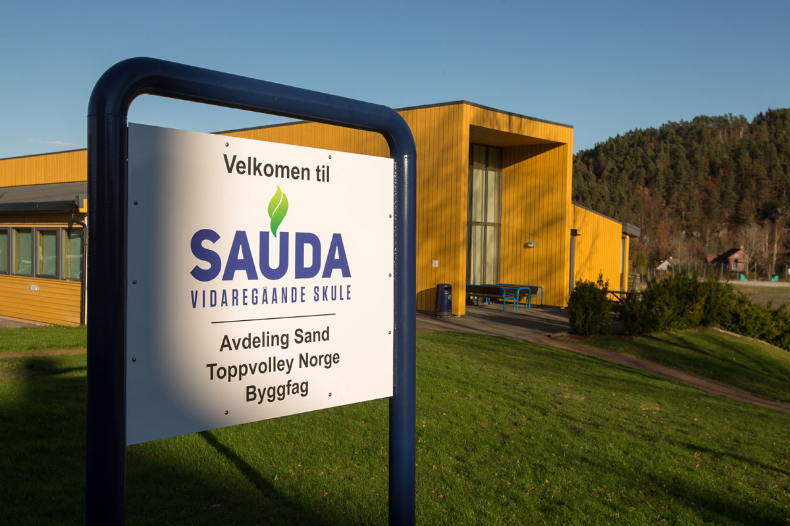

Sauda Videregående Skole
Sauda Vidaregåande Skole er lokalisert i Ryfylke i Rogaland. Skolen er delt opp i tre avdelinger
med tilhold i Sauda og Birkeland, samt Sand i Suldal Kommune.
Sauda Vidaregåande Skole har sirka 400 elever, og rundt 100 ansatte.
De ulike linjene som finnes ved Sauda Videregåande skole kan bli sett ved listen under:
Sauda Videregåande Skole, Avdeling Sauda

- Studiespesialisering
- Elektrofag
- Helse og Oppvekst
- Idrettsfag(Villmark, Park og frykøyring)
- Teknikk og Industriel produksjon
Sauda Videregåande Skole, Avdeling Birkeland

- Yrkessjåfør
- Transport og Logistikk
Sauda Videregåande Skole, Avdeling Sand
- Toppvolley
- Byggfag
Informasjon er tatt ut fra skolens nettside: www.sauda.vgs.no
Sauda VGS ligger nærme sentrum Sauda, og er nærme hurtigbåten og nærmaste hyblane i område.
Dette gjør det lett for mangen elever til å komme seg rundt i Byen.
Avdeling Sauda
Avdeling Birkeland
Avdeling Sand
Dei ulike plasseringane for dei ulike avdelingene til Sauda VGS